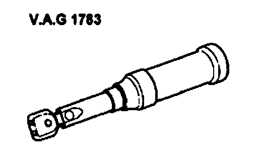
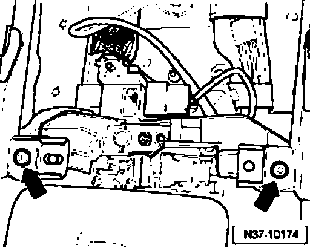
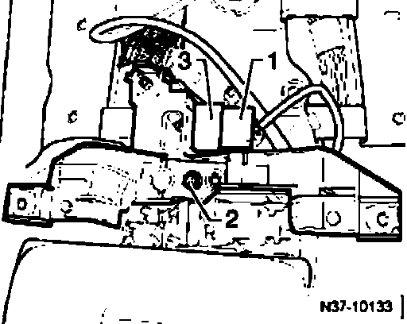
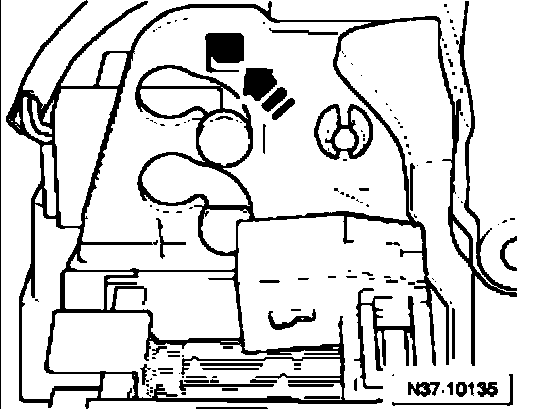
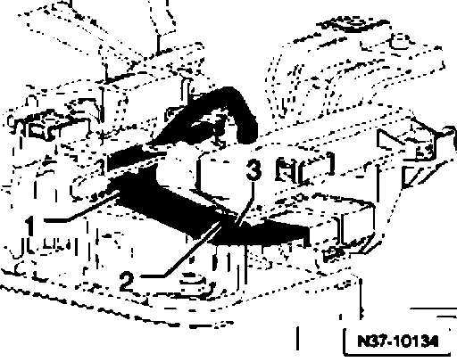
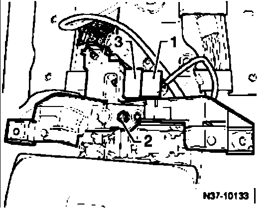

Tiptronic Switch F189, Removing and Installing
Tiptronic switch F189, removing and installing
Special tools, testers and auxiliary items required

^ Torque wrench V.A.G1 783
Removing
- Remove selector lever handle.
- The procedure for disconnecting the battery must be adhered to.
- Disconnect battery Ground (GND) strap with ignition switched off
- Remove cover from center console

- Remove bolts - arrows - from center console.
The tiptronic switch F189 is integrated into wiring harness for both solenoids.

- Release connector - 1 - and pull off.
- Remove bolt - 2 - and remove retainer.
- Pull connector - 3 - out from retainer.
- Separate connectors from solenoids.

- Press securing lever toward right and pull switch upward out of shift mechanism.
Installing
Installation is performed in reverse order of removal. Pay attention to the following:

- Route wiring harnesses - 1 - to - 3 - as shown in illustration.
1 - Wiring harness to shift lock solenoid N110
2 - Wiring harness to selector lever park position solenoid N380
3 - Wiring harness to Tiptronic switch F189

- Press connector - 3 - into the retainer.
- Install bolt - 2 -.
- Connect connector - 1 -.
- Install cover to center console
- Install selector lever handle.